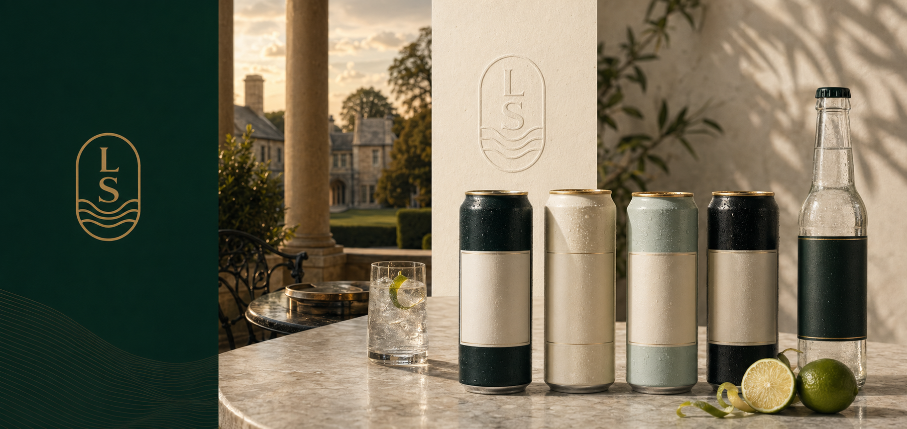

Est. 2002 · Kentucky water
Mix better. Live better. Naturally.
Limestone Springs produces sparkling and still water, tonic waters, ginger beer, ginger ale, craft sodas, cocktail mixers, and tonic syrup for bars, hotels, airlines, retail, e-commerce, and every Hatfield property.

Brand system
Forest green, cream, brass, and water cut through stone.
The Limestone identity is deliberately cleaner and more modern than the parent Hatfield mark: tall condensed lettering, an LS arch, wave lines, and a premium mixer palette built for cans, bottles, bars, and terraces.
Pairing explorer
Build the pour.
Select a serve to see how Limestone Springs works across bars, hotels, retail, and Hatfield venues.
Kentucky Mule
Limestone Springs Ginger Beer is the bartender favourite: spicy, real-ginger, and built for bourbon rather than treated as an afterthought.
- Product
- Limestone Springs Ginger Beer
- Channel
- Bars, Hatfield properties, retail 4-packs
- Signal
- Cocktail credibility
Distribution
30+ countries, with on-trade still the engine.
Sodas · Mixers · Sparkling waters
A family of cans and bottles with one mineral source.
Water as product strategy
Kentucky limestone water supports a full premium beverage system.
Limestone Springs uses Kentucky's mineral water profile as the basis for tonics, ginger beer, sodas, waters, and cocktail mixers. It appears in premium bars, hotels, airlines, grocers, and Hatfield venues as a consistent premium mixer and non-alcoholic beverage platform.